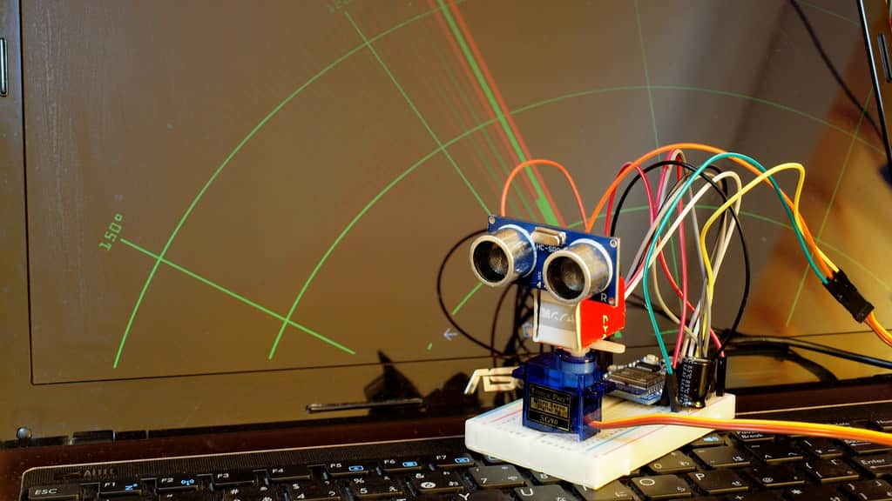
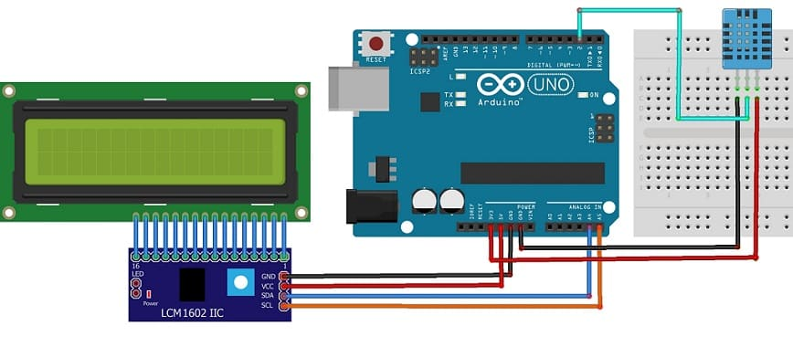

Description : Un projet Arduino Radar consiste à utiliser une carte Arduino pour construire un système capable de détecter et de représenter la position d'objets dans son environnement.
Ce projet est souvent utilisé pour apprendre les bases de l'électronique, de la programmation et de la mesure de distance avec des capteurs.
Description : Un projet détecteur d'humidité avec Arduino consiste à mesurer l'humidité du sol, de l'air ou d'un autre environnement à l'aide de capteurs d'humidité.
Ce projet est particulièrement utile pour l'automatisation de l'irrigation des plantes, le contrôle des conditions environnementales ou la détection d'humidité dans des zones spécifiques.
